Your feed, your mixes
Listen again, Quick picks, My Supermix, Discover Mix and mood filters, straight from your YouTube Music home. Keep scrolling and more loads in.
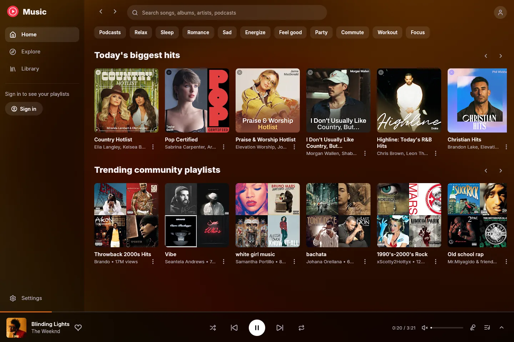
ytm-rs is a native YouTube Music app for Windows, written in Rust. It comes as a 9 MB installer with synced lyrics, romanization and 26 themes, and draws nothing at all when you aren't looking.
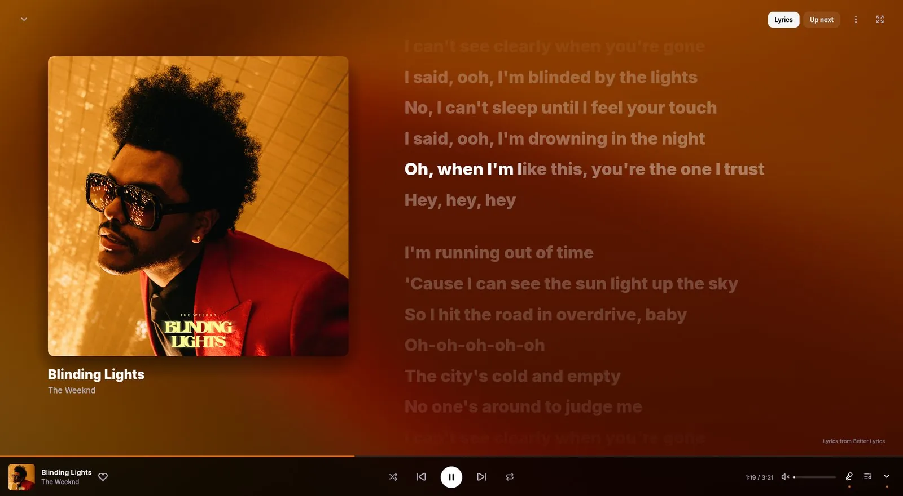
Measured with v0.2.10 on Windows 11: private memory with a song playing, and frames drawn with the window idle.
Your music app shouldn't be a web browser in disguise. ytm-rs draws every pixel itself, decodes audio itself, and talks to YouTube Music directly. It opens fast, stays small, and sleeps when you look away.
Synced lyrics
Lines light up as they're sung. Click one to jump there. Japanese, Korean, Chinese and other non-Latin lyrics get romanization and an English translation underneath. Try it below. The styles use the same numbers as the app's theme presets.
The demo plays the lyrics of さくら さくら (Sakura Sakura), a traditional Japanese folk song in the public domain. In the app, lyrics come from Better Lyrics and translations from Google Translate.
Everything you use YouTube Music for
Listen again, Quick picks, My Supermix, Discover Mix and mood filters, straight from your YouTube Music home. Keep scrolling and more loads in.

Synced lyrics, with romanization and English translation under Japanese, Korean and Chinese lines. Click a line to seek. Hide them to see just the art.
Drop MP3, M4A, FLAC, OGG or WMA files on the window. They go to your YouTube Music library, tags and cover art included.
Loudness normalization from YouTube's own measurements. The next song downloads ahead of time, so skipping is instant. Queue, radio, shuffle, repeat and autoplay are all here.
Media keys and the Windows media flyout, Discord Rich Presence, and controls named for screen readers.
New versions download in the background and install when you close the app. Each update shows its release notes, written by a person.
Songs YouTube keeps behind your account play through your signed-in session. With Premium they play natively. Without it, age-restricted tracks fall back to yt-dlp, so they still play.
Themes
The Better Lyrics community made these as CSS for the browser. ytm-rs translates each one into native rendering: its lyrics, warped backdrop, cover, player bar, fonts and the rest of the app. Every theme credits its creators.
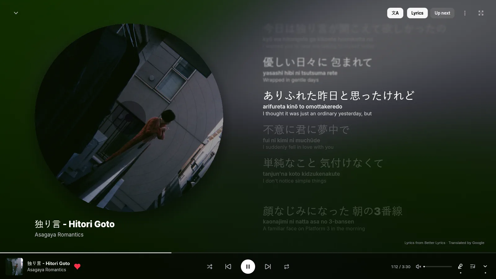
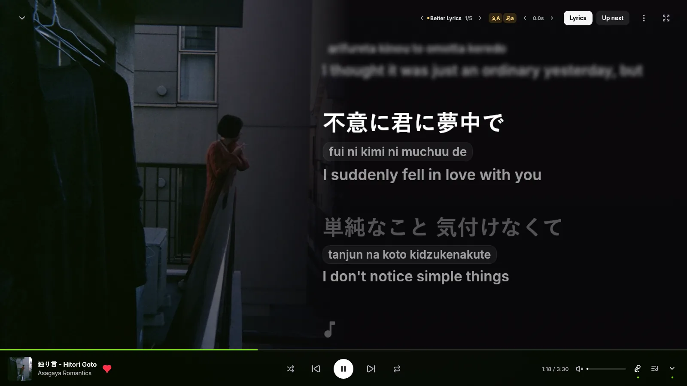
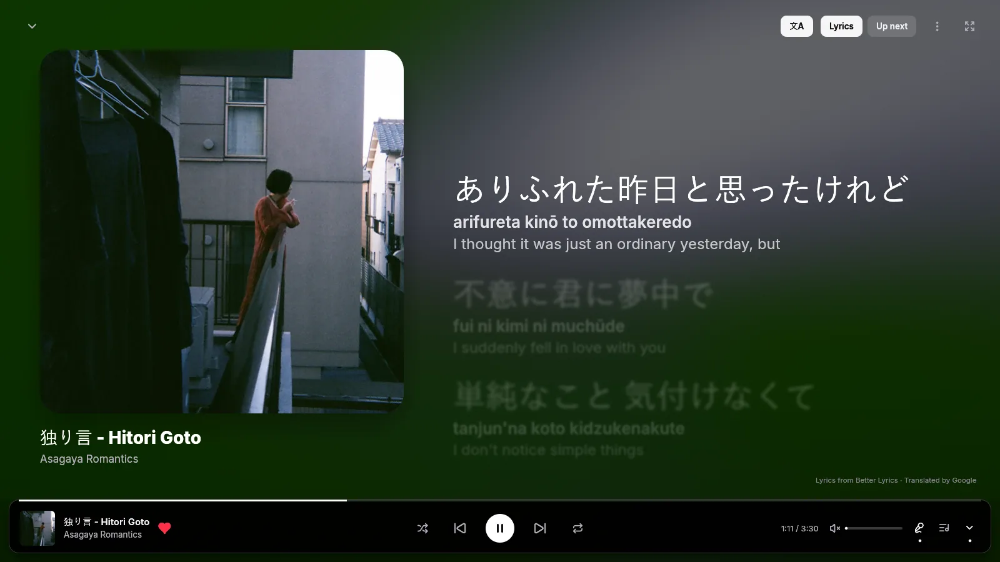
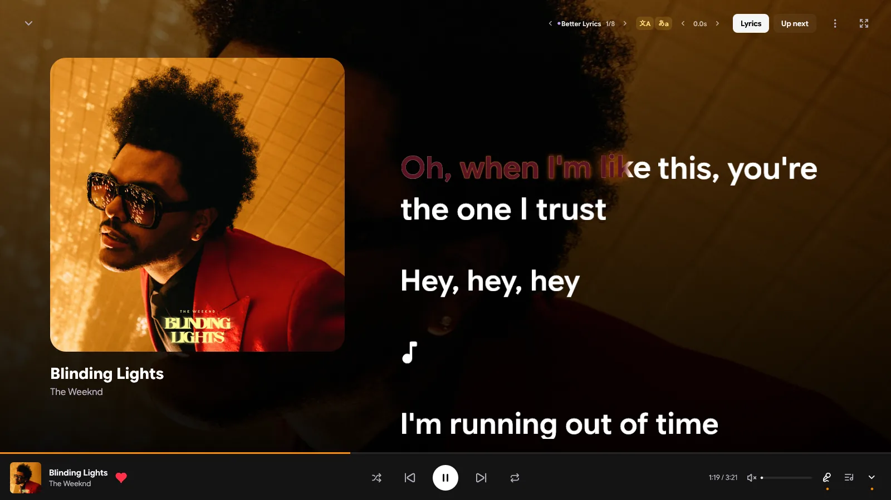
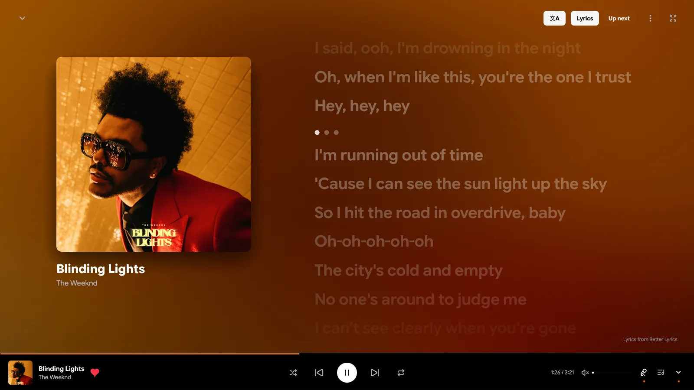
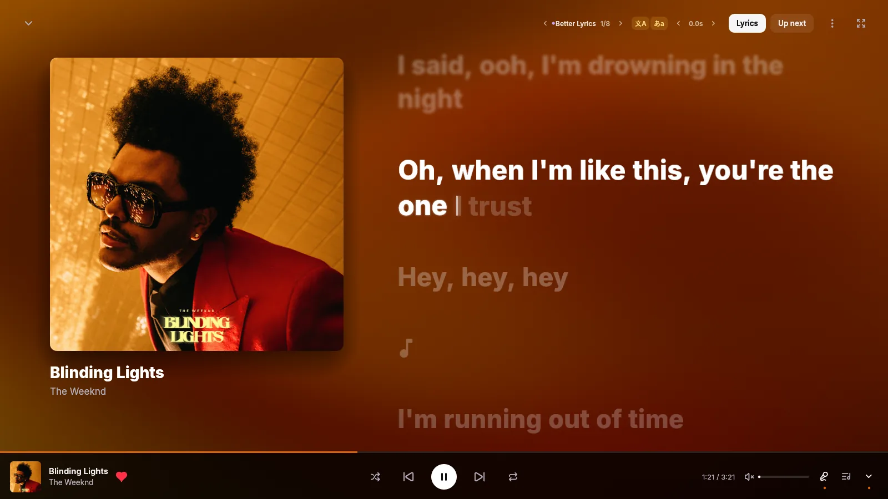
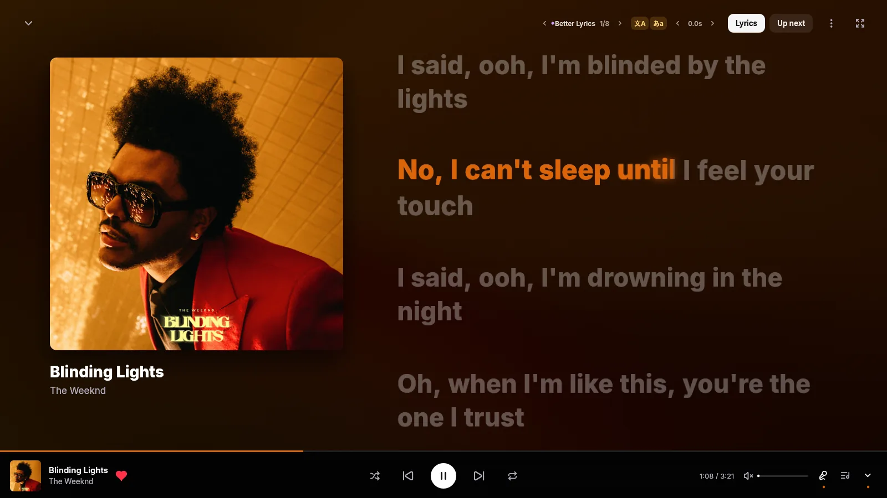
Under the hood
The interface is egui on OpenGL. Audio is rodio and Symphonia. Browsing goes through rustypipe and YouTube's own internal API. It all compiles into one 22 MB executable.
Playback asks YouTube's player endpoint as the visionOS client. It hands back plain stream URLs that allow any byte range, so there's no signature puzzle to solve first. If YouTube returns a 403 halfway through a song, the stream gets a fresh URL and keeps going.
Signed-in Premium streams need YouTube's player JavaScript solved. ytm-rs runs yt-dlp's EJS solver in an embedded QuickJS. The older engine took 16 minutes to prepare one player. rquickjs 0.14 takes about 5 seconds, once per player version.
Opening an MP4 for seeking normally means reading every fragment first. ytm-rs starts on a streaming decoder right away, then swaps in a seekable one built over the same buffer the moment you seek.
egui lays out the whole window on every frame, so frames cost CPU. Browsing runs at 15 fps and now playing at 30. When nothing moves, nothing gets drawn.
The warped album-art background is a native shader port of Kawarp from Better Lyrics, and it reacts to the music. The backgrounds on this page run a WebGL version of the same idea.
Theme effects are rendered properly instead of stacked fake copies, so thin CJK strokes stay clean. Fallback fonts are shifted onto the same baseline as Latin text.
A closer look
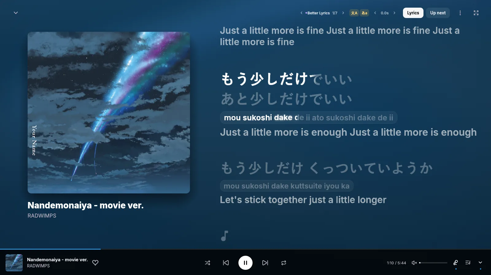
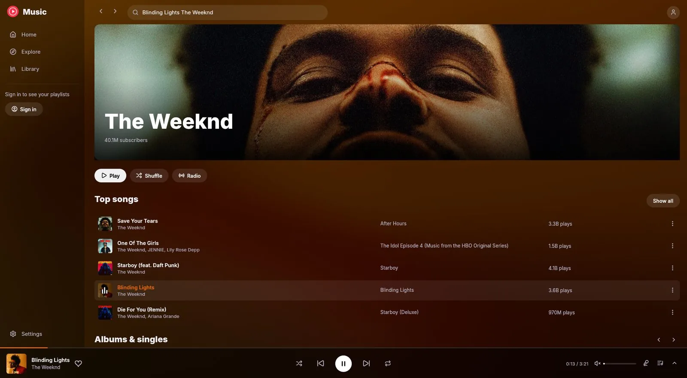
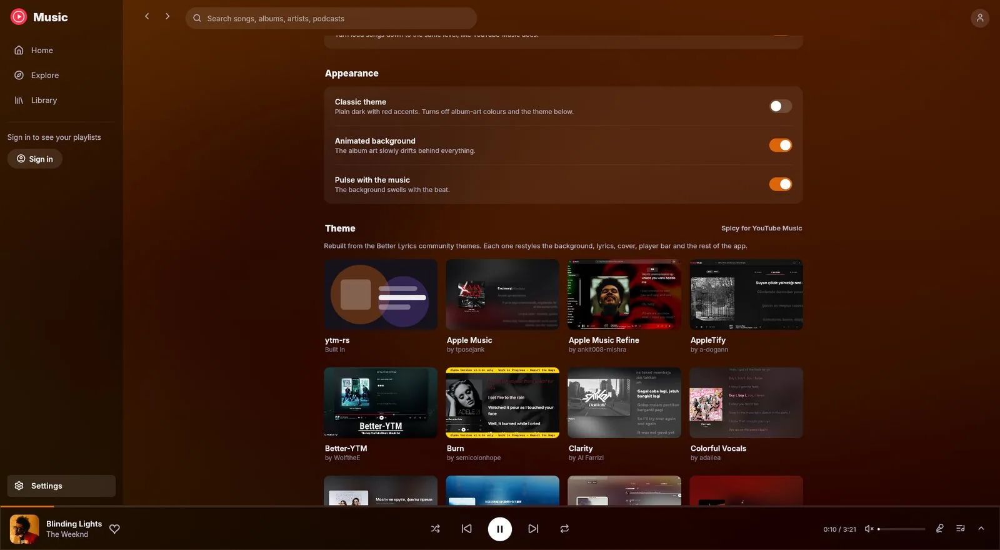
v0.2.10 · 8.5 MB · Windows · October 2026
Installs for your user only, no administrator needed. It adds a Start menu shortcut, and you can uninstall it from Windows Settings.
> git clone https://github.com/grapedjuice/ytm-rs.git
> cd ytm-rs
> cargo build --releaseNeeds the Rust toolchain and the MSVC C++ build tools. The app lands in target\release\ytm-rs.exe.
FAQ
Yes. ytm-rs is free and open source under the GPL-3.0 license. The app has no ads, accounts or paid tiers of its own.
No. ytm-rs is an unofficial client built by an independent developer. It talks to the same services music.youtube.com uses, so changes on YouTube's side can occasionally affect playback, sign-in or lyrics.
No. You can browse, search and play without signing in. Signing in unlocks your home feed, library, likes and history. Premium-only songs play natively if your account has Premium.
Releases are built and tested for Windows. The app is written with cross-platform Rust libraries, but macOS and Linux builds aren't published or tested yet.
Open Settings → Sign in with Google. Google's own sign-in page opens in a temporary system WebView2 window, and the session stays on your computer. The player itself never runs in a webview.
Synced lyrics come from the Better Lyrics API, with YouTube Music's own plain lyrics as a fallback. Romanization and English translations come from Google Translate. They're machine-made, so expect rough spots.
The installed app checks GitHub for new releases, downloads them in the background and installs when you close it. Choose Restart to update to install right away, or turn updates off in Settings → Updates.